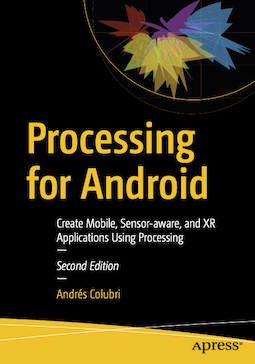

"Processing for Android: Create Mobile, Sensor-Aware, and XR Applications Using Processing" is a book published in 2023 by Apress. This book offers a detailed coverage of Processing for Android, from the first steps with installation and the basics of code sketching, to advanced applications of the Processing language and Android APIs to create original apps using sensor data, geolocation, 2D and 3D graphics, GLSL shaders, VR, and AR.
The first edition was published back in 2017, and for the second edition I made many updates in the text and code examples, as well as as adding two completely new chapters on GLSL shaders and AR. You can read the preface to the first edition by Ben Fry, one of the creators of the Processing software, here.
The three chapters of the first part of the book and chapter 15 on GLS shaders are available on this site for free, together with all the code examples. Click on the "Order from Springer/Amazon" links in the menu to order the eBook or print versions.
